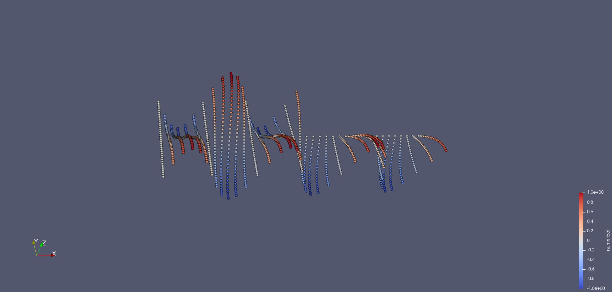

Solving PDEs by collocation
Kernel methods are also suitable to solve partial differential equations (PDEs), which is also sometimes known as Hermite-Birkhoff interpolation, a special case of generalized interpolation. In an abstract setting generalized interpolation deals with the following problem: Given a Hilbert space $H$ and a set of functionals $\{\lambda_i\}_{i = 1}^N\subset H^*$ ($H^*$ being the dual space), find a function $s\in H$ such that $\lambda_i(s) = f_i$ for $i = 1,\ldots,N$ for given function values $f_i$. Classical interpolation, discussed in the previous section, corresponds to the case where $H$ is a reproducing kernel Hilbert space (RKHS) and $\lambda_i(s) = s(x_i)$ are point evaluations at the nodes $x_i$ for $X = \{x_i\}_{i = 1}^N$. In the case of Hermite-Birkhoff interpolation, the functionals $\lambda_i$ are not point evaluations but differential operators, which are applied to the function $s$ and then evaluated at the nodes $x_i$.
The following is mostly based on the book by Fasshauer [Fasshauer2015].
Stationary PDEs
Consider the following general stationary PDE in a domain $\Omega\subset\mathbb{R}^d$:
\[\mathcal{L}u = f,\]
where $\mathcal{L}$ is a linear differential operator of order $m$, $u$ is the unknown function and $f$ is a given function. The operator $\mathcal{L}$ can be written as
\[\mathcal{L}u = \sum_{|\alpha|\leq m} a_\alpha D^\alpha u,\]
where $D^\alpha = \partial_{x_1}^{\alpha_1}\cdots\partial_{x_d}^{\alpha_d}$ is a partial derivative of order $|\alpha| = \alpha_1 + \cdots + \alpha_d$. Note that in the context of PDEs we usually use the notation $u$ for the unknown function instead of $s$ as in the general interpolation problem. For a complete description of the PDE, we also need to specify boundary conditions on the boundary $\partial\Omega$, which can be written with a boundary operator $\mathcal{B}$ as
\[\mathcal{B}u = g,\]
where $g$ is a given function. As boundary operator $\mathcal{B}$ we usually consider the identity operator, which corresponds to Dirichlet boundary conditions. Like in the case of classical interpolation, we pick a set of nodes $X_I = \{x_i\}_{i = 1}^{N_I}\subset\Omega$. Due to the additional boundary conditions, we also pick a set of nodes $X_B = \{x_i\}_{i = N_I + 1}^N\subset\partial\Omega$. Let $N = N_I + N_B$ and $X = X_I\cup X_B$. We again formulate an ansatz function $u$ as a linear combination of basis functions. In the simplest case, we use the same linear combination (neglecting polynomial augmentation for simplicity), i.e.
\[u(x) = \sum_{j = 1}^N c_jK(x, x_j),\]
where $K$ is the kernel function. This approach is also known as non-symmetric collocation or Kansa's method. By enforcing the conditions $\mathcal{L}u(x_i) = f(x_i)$ for $i = 1,\ldots,N_I$ and $\mathcal{B}u(x_i) = g(x_i)$ for $i = N_I + 1,\ldots,N$ we obtain a linear system of equations for the coefficients $c_i$, which can be written as
\[\begin{pmatrix} \tilde{A}_L \\ \tilde{A}_B \end{pmatrix} c = \begin{pmatrix} f_{X_I} \\ g_{X_B} \end{pmatrix},\]
where $\tilde{A}_L\in\mathbb{R}^{N_I\times N}$ and $\tilde{A}_B\in\mathbb{R}^{N_I\times N}$ are the matrices corresponding to the conditions at the interior and boundary nodes, respectively, i.e.
\[\begin{align*} (\tilde{A}_L)_{ij} &= \mathcal{L}K(x_i, x_j), i = 1, \ldots, N_I, j = 1, \ldots, N \\ (\tilde{A}_B)_{ij} &= \mathcal{B}K(x_i, x_j), i = 1, \ldots, N_B, j = 1, \ldots, N. \end{align*}\]
Since the kernel function is known and differentiable, we can compute the derivatives of $K$ analytically.
In KernelInterpolation.jl, the derivatives of the kernel function are computed using automatic differentiation (AD) by using ForwardDiff.jl. This allows for flexibility, simplicity, and easier extension, but it might be slower than computing the derivatives analytically. If you are interested in a more efficient implementation, you can have a look at the test set "Differential operators" in the test suite of KernelInterpolation.jl. This test set not only shows how to use analytical derivatives, but also how to define your own differential operators, which can be used to define custom PDEs.
Note, however, that the system matrix $A = \begin{pmatrix} \tilde{A}_L \\ \tilde{A}_B \end{pmatrix}$ is not invertible in general because it not symmetric anymore as it was the case in the classical interpolation. Thus, this approach is also called non-symmetric collocation.
Let us see how this can be implemented in KernelInterpolation.jl by solving the Poisson equation $-\Delta u = f$ in an L-shaped domain. We start by defining the equation (thus the differential operator) and the right-hand side. KernelInterpolation.jl already provides a set of predefined differential operators and equations.
using KernelInterpolation# right-hand-side of Poisson equationf(x, equations) = 5 / 4 * pi^2 * sinpi(x[1]) * cospi(x[2] / 2)pde = PoissonEquation(f)# analytical solution of equationu(x, equations) = sinpi(x[1]) * cospi(x[2] / 2)u (generic function with 1 method)Next, we define the domain and the boundary of the L-shaped domain. We use a homogeneous grid for the nodes and filter the inner and boundary nodes in two separate NodeSets.
function create_L_shape(N) x_min1 = (0.0, 0.0) x_max1 = (1 * pi, 1.0) x_min2 = (1 * pi, 0.0) x_max2 = (2 * pi, 1.0) x_min3 = (0.0, 1.0) x_max3 = (1 * pi, 2.0) nodeset1 = homogeneous_hypercube(N, x_min1, x_max1) nodeset2 = homogeneous_hypercube(N, x_min2, x_max2) nodeset3 = homogeneous_hypercube(N, x_min3, x_max3) nodeset = merge(nodeset1, nodeset2, nodeset3) unique!(nodeset) nodeset_inner = empty_nodeset(2) nodeset_boundary = empty_nodeset(2) for x in nodeset if x[1] == 0.0 || x[2] == 0.0 || x[2] == 2.0 || x[1] == 2.0 * pi || (x[1] == 1.0 * pi && x[2] >= 1.0) || (x[2] == 1.0 && x[1] >= pi) push!(nodeset_boundary, x) else push!(nodeset_inner, x) end end return nodeset_inner, nodeset_boundaryendnodeset_inner, nodeset_boundary = create_L_shape(6)(NodeSet{2, Float64} with separation distance q = 0.09999999999999998 and 56 nodes, NodeSet{2, Float64} with separation distance q = 0.09999999999999998 and 40 nodes)Finally, we define the boundary condition, the kernel, and collect all necessary information in a SpatialDiscretization, which can be solved by calling the solve_stationary function.
# Dirichlet boundary condition (here taken from analytical solution)g(x) = u(x, pde)kernel = WendlandKernel{2}(3, shape_parameter = 0.3)sd = SpatialDiscretization(pde, nodeset_inner, g, nodeset_boundary, kernel)itp = solve_stationary(sd)Interpolation with 96 nodes, kernel WendlandKernel{2}(k = 3, shape_parameter = 0.3, d = 2) and polynomial of order 0.The result itp is an Interpolation object, which can be used to evaluate the solution at arbitrary points. We can save the solution on a finer grid to a VTK file and visualize it.
many_nodes_inner, many_nodes_boundary = create_L_shape(20)many_nodes = merge(many_nodes_inner, many_nodes_boundary)OUT = "out"ispath(OUT) || mkpath(OUT)vtk_save(joinpath(OUT, "poisson_2d_L_shape"), many_nodes, itp, x -> u(x, pde); keys = ["numerical", "analytical"])The resulting VTK file can be visualized with a tool like ParaView. After applying the filter Warp by Scalar, setting the coloring accordingly, and changing the "Representation" to "Point Gaussian", we obtain the following visualization:

Time-dependent PDEs
KernelInterpolation.jl also supports the solution of time-dependent PDEs. The idea is to use the same approach as above for the spatial part of the PDE and then obtain an ordinary differential equation (ODE), which can be solved by some time integration method (method of lines). The general form of a time-dependent PDE is
\[\partial_t u + \mathcal{L}u = f,\]
where $\mathcal{L}$ is a linear differential operator of order $m$ and $f$ is a given function. The initial condition is given by $u(x, 0) = u_0(x)$. Boundary conditions are applied as before. Similar to the stationary case, we discretize the spatial part of the PDE by collocation and obtain a system of ODEs for the coefficients $c_j$ of the basis functions, i.e. now the coefficients depend on time:
\[u(t, x) = \sum_{j = 1}^N c_j(t)K(x, x_j),\]
where $c_j(t)$ are the coefficients at time $t$. We again divide the spatial domain in a set of points in the inner domain $X_I$ and at the boundary $X_B$. Plugging in the ansatz function into the PDE and the boundary conditions and evaluating at the nodes, we obtain the following system of ODEs and algebraic equations:
\[\begin{align*} \partial_t u(t, x_i) &= \sum_{j = 1}^N \partial_t c_j(t)K(x_i, x_j) = -\sum_{j = 1}^Nc_j(t)\mathcal{L}K(x_i, x_j) + f(x_i), i = 1, \ldots, N_I, \\ 0 &= -\sum_{j = 1}^Nc_j(t)\mathcal{B}K(x_i, x_j) + g(x_i), i = N_I + 1, \ldots, N. \end{align*}\]
These equations can be written compactly as a differential-algebraic equation (DAE) of the form
\[Mc^\prime(t) = -Ac(t) + b\]
where $c(t) = [c_1(t), \ldots, c_N(t)]^T$ is the vector of coefficients, $M\in\mathbb{R}^{N\times N}$ is a (singular) mass matrix, $A\in\mathbb{R}^{N\times N}$ is the system matrix, and $b = \begin{pmatrix}f_{X_I}\\ g_{X_B}\end{pmatrix}\in\mathbb{R}^N$. The matrices are given by
\[M = \begin{pmatrix} \tilde{A_I}\\0\end{pmatrix} \quad\text{and}\quad A = \begin{pmatrix} \tilde{A_L}\\\tilde{A_B}\end{pmatrix},\]
where
\[\begin{align*} \tilde{A_I}\in\mathbb{R}^{N_I\times N}, (\tilde{A_I})_{ij} &= K(x_i, x_j),\\ \tilde{A_L}\in\mathbb{R}^{N_I\times N}, (\tilde{A_L})_{ij} &= \mathcal{L}K(x_i, x_j),\\ \tilde{A_B}\in\mathbb{R}^{N_B\times N}, (\tilde{A_B})_{ij} &= \mathcal{B}K(x_i, x_j). \end{align*}\]
The coefficients for the initial conditions can be computed from the initial condition $u_0(x)$ by solving the linear system
\[\begin{pmatrix} \tilde{A_I}\\\tilde{A_B} \end{pmatrix} c_0 = (u_0)_X.\]
For the solution of the DAE system, KernelInterpolation.jl uses the library OrdinaryDiffEq.jl, which already provides a wide range of time integration methods. Note that this is a differential-algebraic equation (DAE) system, which is more difficult to solve than a simple ODE system. Thus, we are restricted to specialized time integration methods, which can handle DAEs. We recommend using the Rodas5P method, which is a Rosenbrock method for stiff DAEs. See also the documentation of OrdinaryDiffEq.jl for more information. Rodas5P along with other Rosenbrock methods are implemented in the subpackage OrdinaryDiffEqRosenbrock.jl. Therefore, we recommend using this package in combination with KernelInterpolation.jl to reduce precompile time. In order to solve DAEs with OrdinaryDiffEqRosenbrock.jl, we also need to import the subpackage OrdinaryDiffEqNonlinearSolve.jl.
In KernelInterpolation.jl, you can use the constructor of a Semidiscretization in a very similar way as SpatialDiscretization, but with the additional initial condition. This can be turned into an ODEProblem object from the OrdinaryDiffEq.jl ecosystem by calling semidiscretize. The resulting ODEProblem can then be solved by calling the solve function from OrdinaryDiffEq.jl. The resulting object is an ODESolution object, which can be transferred to a TemporalInterpolation by calling TemporalInterpolation on it. This object acts similarly to an Interpolation, but has an additional time argument, e.g., itp = titp(1.0) gives an interpolation object itp from a temporal interpolation titp at time t = 1.0.
For a complete example of a time-dependent PDE, see, e.g., an example of the heat equation. KernelInterpolation.jl provides some callbacks that are can be passed to solve in order to call them during the time integration process. These can be used to monitor the solution or to save it to a file. To date, these are AliveCallback, SaveSolutionCallback, and SummaryCallback.
RBF-FD Discretization
The global collocation approach described above uses all $N$ nodes as basis functions, leading to a dense system matrix. Radial basis function finite differences (RBF-FD) is an alternative local approach that assembles sparse operators from local stencils. Instead of involving all nodes, RBF-FD selects a small neighborhood around each node and computes differential operator weights locally. This yields a sparse system matrix, which is more efficient for large-scale problems.
In KernelInterpolation.jl, RBF-FD is selected by passing RBFFD() as the discretization method to SpatialDiscretization. The stencil is controlled by the stencil_selection keyword argument, e.g. KNearestNeighbors(n) to use the $n$ nearest neighbors of each node or RadiusSearch(r) to use all nodes within a radius $r$. For example, to solve the Poisson equation on a unit square with RBF-FD:
using KernelInterpolationpde = PoissonEquation((x, equations) -> 1.0)nodeset_inner = homogeneous_hypercube(12, (0.1, 0.1), (0.9, 0.9))nodeset_boundary = homogeneous_hypercube_boundary(4; dim = 2)g(x) = 0.0kernel = PolyharmonicSplineKernel{2}(3)sd = SpatialDiscretization(pde, nodeset_inner, g, nodeset_boundary, RBFFD(), kernel; stencil_selection = KNearestNeighbors(25), m = order(kernel))itp = solve_stationary(sd)The local_basis keyword of SpatialDiscretization controls how local stencil weights are computed:
RBFFDLagrangeBasis()(default): builds local cardinal (Lagrange) functions $\ell_j$ on each stencil and uses weights $w_j = \mathcal{L}\ell_j(x_i)$.RBFFDStandardBasis(): solves the local kernel/polynomial RBF-FD system directly for the weights.
Both algorithms produce the same weights up to numerical precision. To use the standard-basis algorithm:
sd_std = SpatialDiscretization(pde, nodeset_inner, g, nodeset_boundary, RBFFD(), kernel; stencil_selection = KNearestNeighbors(25), m = order(kernel), local_basis = RBFFDStandardBasis())For time-dependent equations, the same Semidiscretization and semidiscretize workflow applies:
pde_t = HeatEquation(0.1, (t, x, equations) -> 0.0)u0(_, x, _) = sin(pi * x[1])g_t(t, x) = 0.0sd_t = SpatialDiscretization(pde_t, nodeset_inner, g_t, nodeset_boundary, RBFFD(), kernel; stencil_selection = KNearestNeighbors(25))semi = Semidiscretization(sd_t, u0)ode = semidiscretize(semi, (0.0, 0.2))References
- Fasshauer2015Fasshauer (2015): Kernel-based Approximation Methods using MATLAB, World Scientific, DOI: 10.1142/9335.